地政学
モンバサはケニアと内陸国をインド洋へつなぐ港湾都市です。港、SGR、幹線道路、フェリー、空港が国家物流と地域政治を動かし、ナイロビ中心の統治と海岸部の自治意識の間で独自の重みを持つ重要な海の要衝なのです。
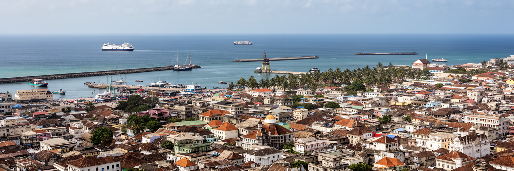
🇰🇪 ケニア / モンバサ郡 / World City Atlas
インド洋に開くケニア最大の港湾都市であり、スワヒリ文化、イスラムとキリスト教、旧市街、コンテナ港、フェリー、観光浜辺が重なる海の玄関です。
都市の骨格
モンバサは島状の中心部、北岸と南岸、コンテナ港、旧市街、浜辺、鉄道、フェリーが密接に結びつく都市です。海上交易の記憶と現代物流が同じ入り江で動き、ケニア内陸と東アフリカを外洋へつなぎます。
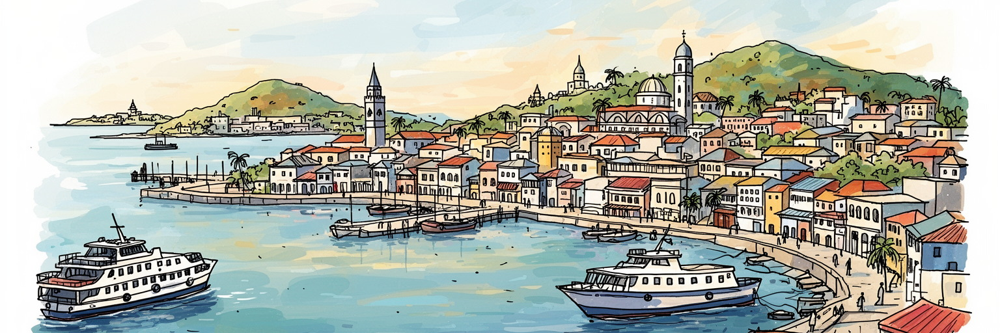
モンバサはケニアと内陸国をインド洋へつなぐ港湾都市です。港、SGR、幹線道路、フェリー、空港が国家物流と地域政治を動かし、ナイロビ中心の統治と海岸部の自治意識の間で独自の重みを持つ重要な海の要衝なのです。
港湾荷役、通関、倉庫、トラック、鉄道、製造、ホテル、露店、小売、建設、清掃、フェリー運航が雇用を支えます。観光と物流の繁忙は季節や世界貿易に左右され、若者の仕事探しと技能形成が日々の課題なのです。
旧市街の路地、モスク、教会、スワヒリ語、アラブ、南アジア、ミジケンダの記憶が重なります。イスラムの礼拝、キリスト教行事、海辺の食、結婚式、祭礼が都市の暦を作り、多文化の緊張と親密さを見せる街です。
旅行者はフォート・ジーザス、旧市街、ナイアリやディアニ方面の浜辺へ向かいます。住民には家賃、渋滞、フェリー待ち、水、排水、雇用、治安、暑さが現実で、観光の海景と生活の負担が近くにある港町なのです。
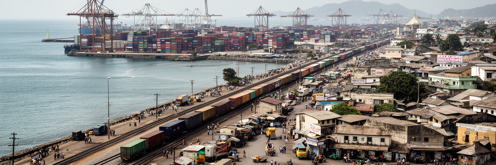
モンバサを理解する第一の入口は港です。インド洋に深く入り込む入り江は、帆船、ダウ船、植民地船、現代のコンテナ船を受け入れてきました。現在の港はケニア国内だけでなく、ウガンダ、ルワンダ、南スーダン、コンゴ東部へ向かう貨物の玄関であり、通関、倉庫、トラック、標準軌鉄道、燃料、穀物、車両、建材、消費財を動かします。港が混むと内陸の店や工場に影響し、国境を越える物流の遅れは物価にも響きます。港の仕事は華やかな貿易額だけではありません。荷役、警備、清掃、修理、食堂、通関書類、夜勤、運転、港外の待機時間が積み重なって都市を支えます。港湾拡張や効率化は国家経済に必要ですが、周辺住民には騒音、排気、土地利用、交通事故、立ち退きの不安も生みます。モンバサの港は発展の象徴であると同時に、海岸部の生活空間に重く入り込む巨大な産業装置です。都市を読むには、船だけでなく、港で働く人、港に依存する小商い、港から押し出される土地、内陸へ伸びる鉄道まで一体で見る必要があります。港湾の成長は税収や雇用を生みますが、利益が住宅、学校、保健、排水へ戻らなければ、都市の負担は住民側に残ります。海に開く経済を生活の改善へ結び直すことが、港湾都市としての成熟です。港の効率を語る時ほど、港外で待つ運転手や近隣の家族の時間も一緒に見る必要があります。
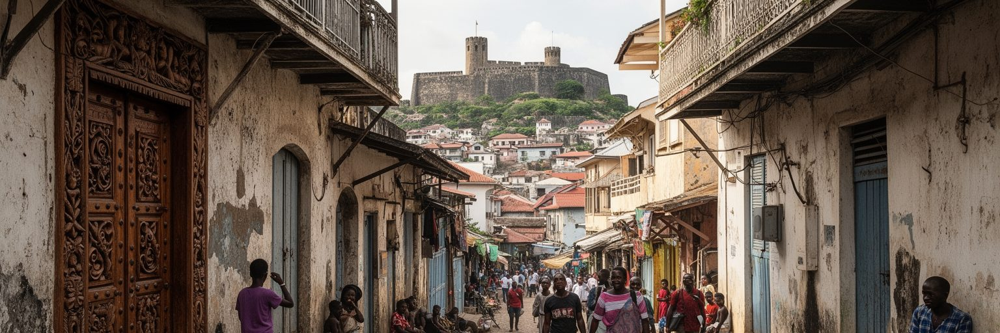
モンバサ旧市街は、狭い路地、木彫りの扉、バルコニー、白い壁、商店、モスク、海風が重なる歴史地区です。フォート・ジーザスはポルトガル勢力、オマーン、スワヒリ商人、英国植民地支配をめぐる争奪の記憶を持ち、海上交易の軍事的な緊張を現在に伝えています。世界遺産としての価値は建築の古さだけでなく、インド洋世界の移動、宗教、商業、奴隷制、香辛料、象牙、布、移民の歴史が一つの都市空間に折り重なる点にあります。一方、保存は簡単ではありません。古い建物には住民が暮らし、修繕費、所有権、観光客の流れ、治安、衛生、道路整備が日々の問題になります。写真に残る美しい扉の背後には、家族の台所、賃貸部屋、小さな店、学校へ向かう子どもがいます。旧市街を観光地としてだけ消費すると、住民の生活と歴史の痛みが見えにくくなります。モンバサの旧市街は、港湾都市がどのように外からの力を受け入れ、抵抗し、混ざり合い、自分の言葉で記憶を作ってきたかを読む場所です。保存と生活を同時に守れるかが、歴史都市としての信頼を決めます。修復された壁の色だけでなく、誰が家賃を払い続けられるか、誰が歴史を説明する仕事を得るかも重要です。遺産は住む人の尊厳を失うと、ただの背景になってしまいます。路地の暮らしと博物館の説明が結びつく時、旧市街は過去ではなく現在の都市になります。
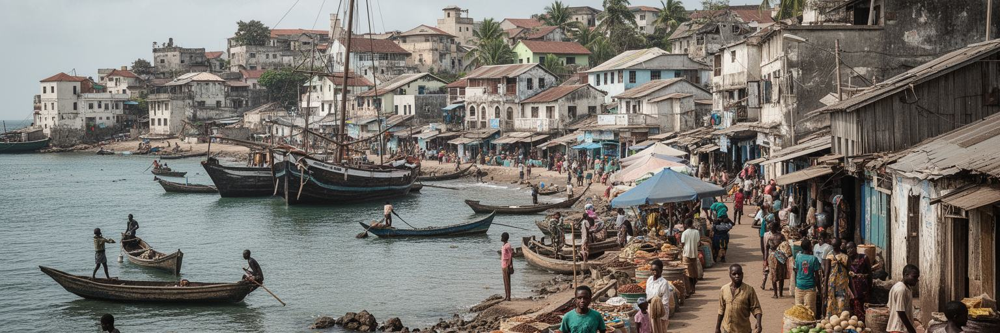
モンバサはスワヒリ海岸の重要な都市です。スワヒリ語は単なる共通語ではなく、アフリカ東岸、アラビア半島、ペルシア湾、インド洋交易、イスラム、植民地支配、現代国家をつなぐ歴史の層を持ちます。街の食、挨拶、結婚式、服飾、詩、音楽、建築、屋内のしつらえには、海を越えた交流と地元社会の選択が表れます。アラブや南アジアの影響は目に見えますが、それを外来文化として単純に扱うと、何世代にもわたりこの海岸で暮らしてきた人々の主体性を見落とします。モンバサの文化は混ざった結果であるだけでなく、どの関係を受け入れ、どの支配に抵抗し、どの言葉を日常に残すかを選んできた歴史です。観光客は旧市街のエキゾチックな雰囲気に惹かれますが、住民にとって文化は生活の作法です。礼拝時間、家族行事、食の規律、近所づきあい、海辺の商売が都市のリズムを作ります。スワヒリ文化を読むことは、モンバサをケニアの一地方都市としてだけでなく、インド洋世界の都市として見ることです。その視点があると、港と路地、言葉と宗教、商業と家庭が一つの海の文化として結びつきます。学校やメディアで標準化される言葉と、家庭や市場で使われる言い回しの差にも都市の歴史が残ります。言語は観光用の飾りではなく、共同体の記憶を運ぶ道具です。若い世代が音楽やSNSで使い直す表現にも、海岸の都市文化は更新され続けています。
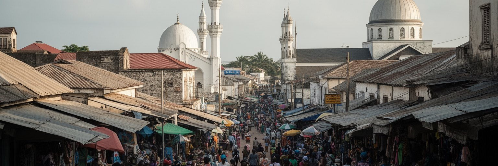
モンバサではイスラムとキリスト教が都市の暦と空間に強く現れます。旧市街や海岸部にはモスクが多く、礼拝の時間、ラマダン、結婚式、葬送、慈善、食の作法が暮らしのリズムを作ります。教会も学校、医療、福祉、音楽、若者活動と結びつき、週末の移動や家族行事に影響します。宗教は観光名所の背景ではなく、住民が信頼を作り、助けを求め、世代をつなぐ生活基盤です。同時に、宗教と民族、階層、政治、治安の問題は慎重に読む必要があります。沿岸部ではイスラム共同体の歴史的な厚みがある一方、国家の安全保障政策や若者の失業、過激化への不安、差別感情が社会を傷つけることがあります。信仰を一括りにして危険視すれば、地域の信頼は失われます。逆に、貧困や疎外の問題を宗教だけで説明しても現実を誤ります。モンバサの宗教生活を理解するには、モスクや教会の建物だけでなく、学校、食堂、寄付、近所の相談、女性のネットワーク、若者の仕事探しまで見る必要があります。礼拝の声と港の騒音、観光客の足音と家族の祈りが同じ街に響くところに、モンバサの複雑な共同体があります。異なる信仰の人々が同じ市場やバス停を使い、同じ水や雇用の課題に向き合うことも重要です。共存は理念だけでなく、日々の実務として作られます。互いの祝日や食の規律を知ることも、港町の社会を穏やかに保つ知恵です。
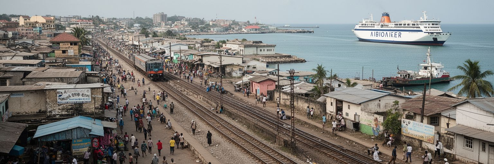
モンバサの移動は、地図上の距離よりも橋、フェリー、港湾道路、鉄道、渋滞で決まります。標準軌鉄道はモンバサとナイロビを結び、貨物と旅客の流れを変えました。港から内陸へ貨物を速く送ることは国家経済に大きな意味を持ちますが、駅の位置、料金、旧来のトラック業者、沿線の小商いには影響が出ます。南岸へ向かうリコニ・フェリーは、住民、学生、労働者、観光客、バイク、車を日々運ぶ生活の動脈です。フェリー待ちは単なる不便ではなく、通勤時間、子どもの通学、救急、観光地への移動、物価に関わります。橋や道路計画は都市の未来を変える可能性がありますが、移動が速くなるほど土地価格や開発圧力も上がります。公共交通の弱さ、歩行者の安全、マタツやトゥクトゥクの働き方、港湾トラックの排気も、住民にとっては身近な問題です。モンバサを読む時、海は美しい景色であると同時に移動を遮る境界でもあります。島と本土を結ぶ装置が止まれば、都市全体の生活が滞ります。鉄道とフェリーは、世界貿易と毎朝の通勤が同じ都市でつながっていることを示す、モンバサの核心的なインフラです。移動の改善は経済政策であると同時に、家族の食事時間や病院へ着く速さを変える生活政策でもあります。待ち時間を減らすことは、都市の余白を増やすことです。だから交通投資は、貨物量だけでなく、徒歩や小商いへの影響まで測る必要があります。
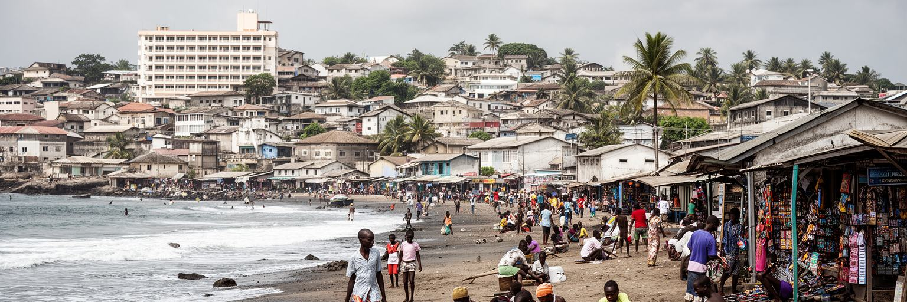
モンバサ観光は、フォート・ジーザス、旧市街、ナイアリやバンブリの浜辺、南岸のリゾート、海洋公園、レストラン、夜の娯楽を軸に成り立っています。白砂の海岸はケニアを代表する観光イメージですが、浜辺は余暇の場所であると同時に、ホテル従業員、清掃員、警備員、ガイド、漁師、土産物商、運転手、調理人、ダイビング業者が働く職場です。観光が伸びれば雇用と税収が増えますが、外部資本への利益流出、季節雇用、低賃金、性的搾取、薬物、治安不安、海岸環境の悪化も問題になります。旅行者が快適に過ごす裏側には、早朝から砂を整え、食材を運び、客室を清掃し、夜遅くまで働く人がいます。浜辺の開発は、地域住民の海へのアクセスや漁業にも影響します。観光都市としてのモンバサの価値は、訪れる人の満足だけでなく、住民が海を使い続けられるか、若者が技能を得られるか、文化が安く消費されるだけにならないかで測られるべきです。海は都市の看板ですが、同時に生活の場です。観光を地域の力に変えるには、歴史、食、工芸、環境保全、労働条件をまとめて考える必要があります。さらに、観光客が旧市街や市場を訪れる動線を広げれば、浜辺だけに利益が偏る状態を緩められます。海を楽しむ旅と、街を理解する旅をつなぐことが大切です。地元ガイドや小さな宿が語る歴史は、リゾートだけでは見えない都市の奥行きを伝えます。
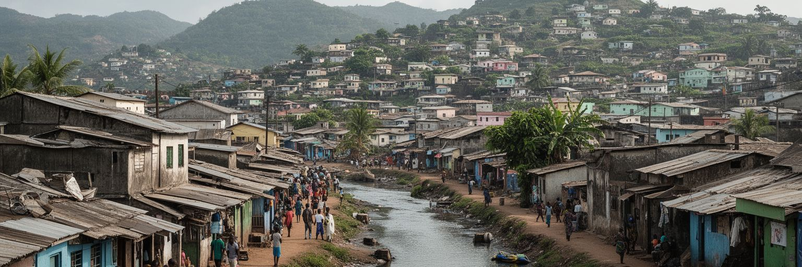
モンバサの暮らしは、港と観光の豊かさだけでは説明できません。島の中心部、北岸、南岸、低所得地区、非公式居住地、郊外の新しい住宅地では、家賃、水、排水、ゴミ収集、道路、学校、医療、治安へのアクセスが大きく異なります。土地が限られ、港湾施設や観光開発が強い都市では、住める場所が狭まりやすく、海に近い利便性は価格の高さや立ち退き不安と結びつきます。若者や低賃金労働者は、港、ホテル、店、建設現場で働きながら、長い移動や不安定な住まいを引き受けることがあります。非公式居住地を単に問題として見るだけでは不十分です。そこには親族、宗教施設、小商い、路上販売、相互扶助、学校への送迎、地域の知恵があります。しかし、排水が弱く、洪水や火災、病気、警察との摩擦に脆いことも事実です。都市政策は、景観を整えるために人を追い出すのではなく、住民が残りながら安全なインフラを得られる方法を探す必要があります。モンバサの住宅問題は、港湾都市の成功が誰の生活を支えているのかを問う問題です。海辺の発展と裏通りの暮らしを同時に見ることで、都市の公平性が見えてきます。学校に近い住まい、水が安定して出る住まい、夜に安全に帰れる道は、観光施設と同じくらい都市の価値を作ります。暮らしの基礎が整ってこそ、港の成長も地域の力になります。
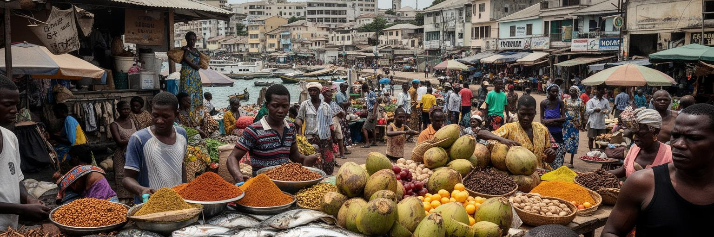
モンバサの食は、インド洋の交易、スワヒリ家庭、イスラムの暦、南アジア系の店、内陸から届く農産物、海の漁に支えられています。ビリヤニ、ピラウ、サモサ、チャパティ、魚料理、ココナツを使った料理、香辛料、甘い菓子、屋台の軽食は、観光客にとって魅力である前に、住民の昼食と家族行事を形作ります。市場では魚、野菜、米、豆、肉、果物、香辛料が動き、港湾労働者、学生、ホテル従業員、家庭の料理人、小商人が価格と品質を見ながら買い物をします。食の豊かさは、物流と所得に敏感です。燃料費や輸入価格、天候、漁場の変化、港の混雑は食卓に届きます。衛生、冷蔵、排水、ゴミ処理、露店規制も、都市の健康と商売を左右します。観光地のレストランだけを見れば、モンバサの食文化は華やかに見えますが、実際には早朝の市場、家庭の仕込み、宗教行事の料理、低価格の食堂が都市を支えています。食は文化の入口であり、労働と環境の鏡でもあります。皿の上の香りをたどると、海、港、農村、宗教、家族、移民の歴史が一つにつながります。料理を支える女性の労働、仕入れの信用、断食明けの食卓、港で働く人の安い昼食も、都市を読む大切な手がかりです。食文化は記念写真よりも、毎日の反復の中で強く残ります。台所と市場を見れば、海の都市が内陸の農村にも深く依存していることが分かります。
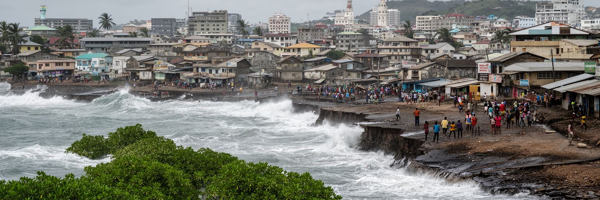
モンバサは海に開くことで栄えてきましたが、その海は気候リスクも運びます。熱帯の暑さ、湿気、長雨と短雨、高潮、海岸侵食、洪水、排水不良、海面上昇は、住宅、道路、観光施設、港湾、衛生に影響します。低地や密集地区では、雨が降ると道路が冠水し、排水路の詰まりが病気や移動の不便につながります。観光浜辺では海岸浸食やサンゴ礁の劣化が収入を脅かし、港湾施設では高潮と極端気象への備えが必要になります。気候変動は将来の抽象的な問題ではなく、すでに家の床、通学路、ホテルの投資、漁の量、保険、公共予算に関わる現実です。適応策は堤防や排水工事だけでは足りません。マングローブや海岸生態系の保全、廃棄物管理、涼める公共空間、暑さの中で働く人への配慮、早期警報、避難路、住民参加の計画が必要です。モンバサの気候リスクは、貧しい地区ほど重く受ける傾向があります。水辺の魅力を売り物にする都市だからこそ、水辺に暮らす人の安全を中心に置かなければなりません。海は富の源であると同時に、都市の脆さを映す鏡です。港湾投資やホテル開発は、気候適応と切り離せません。新しい施設ができても、排水路や避難情報が弱ければ、災害時の負担は周辺住民に集中します。暑さの中で働く人の休息場所や水へのアクセスも、気候対策の一部として扱う必要があります。
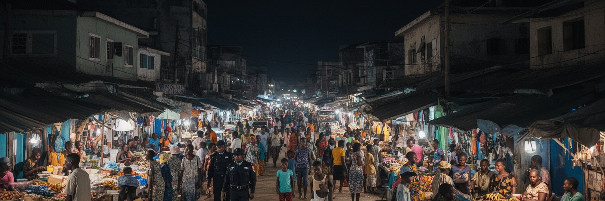
モンバサの社会課題は、港湾都市の開放性と不平等の両方から生まれます。若者の失業、薬物、性産業、観光地の搾取、警察への不信、宗教をめぐる偏見、土地問題、非公式居住、学校中退は、別々の問題ではなくつながっています。港やホテルが近くにあっても、安定した技能と賃金へ届かない若者は多く、短期の仕事や路上の商売に頼ることがあります。治安対策は必要ですが、貧困や疎外を力で抑えるだけでは信頼は生まれません。地域の宗教指導者、学校、スポーツ、職業訓練、女性団体、保健サービス、薬物依存への支援、若者が働ける小さな事業が都市の安全を支えます。観光客が安心して歩ける街を作ることと、住民が警察や行政を信頼できる街を作ることは同じ課題です。社会問題を外からの危険としてだけ語ると、沿岸部の歴史的な疎外感や経済格差が見えません。モンバサの強さは多文化性と海への開放性にありますが、それを持続させるには、港湾投資やホテル開発の利益が教育、住宅、保健、技能へ戻る必要があります。安全な都市とは、監視が強い都市ではなく、若者が将来を選べる都市です。地域の信頼を回復するには、行政が住民を疑う前に、雇用、治療、相談、学び直しへ届く窓口を増やす必要があります。不安を減らす政策が、治安を長く支えます。問題を抱えた地区を切り離さず、市場や学校や港の仕事と結び直すことが重要です。
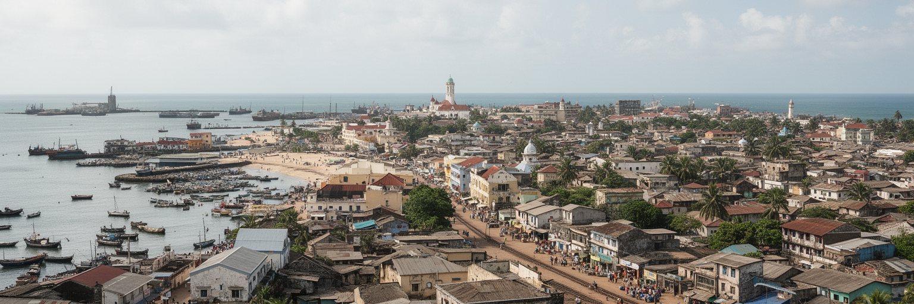
モンバサは、世界都市を首都や金融だけで測る見方を変える都市です。政治の中心はナイロビにありますが、東アフリカの貨物、観光、スワヒリ文化、インド洋交易、宗教、海岸部の自治意識を読む時、モンバサは欠かせません。旧市街の路地には何世紀もの海上交流が残り、港のクレーンには現代の貿易と国家投資が現れ、フェリー乗り場には毎日の通勤と都市の分断が見えます。浜辺は美しい観光資源である一方、働く人の季節雇用と環境リスクを抱えます。モスクと教会、市場とホテル、コンテナ港と非公式居住地を一緒に見ると、モンバサは単なるリゾートでも、単なる港でもありません。海がもたらす開放性は文化を豊かにしますが、外部資本、治安不安、気候変動、物流の圧力も呼び込みます。都市の未来は、港湾効率を上げることだけでなく、住民が安全に住み、働き、海へアクセスし、歴史を自分たちの言葉で語れるかにかかっています。モンバサを読むことは、東アフリカが世界経済へつながる入口を読むことであり、その入口で暮らす人々の誇り、労働、信仰、不安を同時に見ることです。海岸都市の価値は、外から来る船や旅行者の数だけでは決まりません。港で得た力を、路地の暮らし、若者の仕事、海辺の環境へ戻せるかが、モンバサの次の評価軸になります。海を眺めるだけでなく、海で働き、海に守られ、海に脅かされる人の視点から読む都市です。